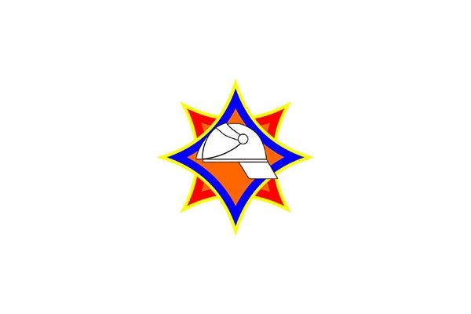

Полезная информация от сотрудников МЧС .
ВНИЗ

Водная среда и ее воздействие на организм человека.
Вода занимает 2/3 территории нашей планеты. С ней связаны катастрофы больших и маленьких судов, наводнения, цунами, гибель людей..
Человек имеет в воде отрицательную плавучесть, что является причиной его погружения под воду в случае невозможности выполнения плавательных движений и отсутствия спасательных средств.
 Спасательные средства
Полезная информация от сотрудников МЧС
Спасательные средства
Полезная информация от сотрудников МЧС
Основными средствами спасения являются:
спасательный круг
нагрудник
жилет
мяч
плот
доска
Они позволяют:
увеличить плавучесть человека;
создать дополнительную выталкивающую силу;
обеспечить устойчивое дыхание;
предотвратить охлаждение головы и попадание воды в дыхательную систему.
Спасательная доска спасательная доска предназначена для подачи ее провалившемуся под лед. Изготавливается она из ели, сосны, жесткого мелкозернистого пенопласта длиной от 3,5 до 8 м, шириной 20 см, толщиной 3 -4 см. С одной стороны доски крепится пеньковый (синтетический) конец длиной 25 – 30 м (возможна катушка), с другой – одна-две веревочные петли для рук.
Спасательные круги используются для оказания помощи пострадавшим путем их бросания в воду и различаются размером, массой, материалом.
Спасательные мячи используются при нахождении пострадавшего на расстоянии 50-60 м от берега или плавсредства. Мячи кладут в сетку, к которой закреплена капроновая веревка. После забрасывания пострадавший держится за сетку, а спасатель подтягивает его к себе. В зависимости от состояния, пострадавший может лечь между мячами и плыть в безопасное место.
Данный материал является пробным домашним заданием по созданию статического сайта